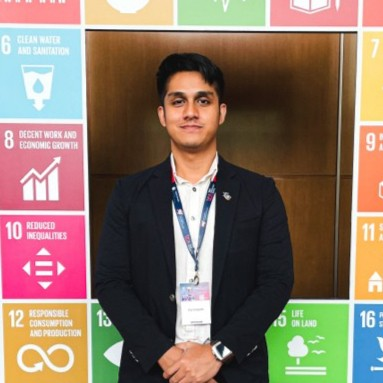

Hadri Zharif, P.Tech.

Summary
Electrical engineering master's candidate with first-class honors in mechanical engineering and extensive business development
experience in renewable energy, specializing in financial modeling, technical feasibility, and securing high-value contracts to
promote sustainable energy solutions.
Education
- Master in Electrical Engineering, Universiti Tenaga Nasional (UNITEN)
- September 2024 (Expected)
-
Thesis tittle: A simulation of An Integrated Palm Waste Based Bio-Hydrogen Production and Refuelling Station
Facility Using Linear Modelling for an Energy Flow Optimization. (An effort to promote greeen mobility in Malaysia)
Bachelor of Technology, Aircraft Engineering Technology (Hons.) in Mechanical Engineering, UniKL Malaysia Institute of Technology
- Cummulative GPA:3.7 (First class honors)
Work Experience
- Assistant Manager, Business Development
- April 2023 - Present
- Successfully negotiated and secured a 20-year biomass steam supply contract with a Japanese multinational petrochemical
plant for scope 2 emission reductions (RM20mil value).
- Senior Executive, Technical & Project Management
- Dec 2020 - March 2023
- Successfully contributed in securing 5 RE projects valued at RM48mil by structuring business model strategies, conducting
technical and commercial feasibility studies, developing financial models and pitch decks
- Executive, Technical
- August 2019 - November 2020
- Raised RM11.5mil in the form of term financing-i for the development of a RE power plant project in Terengganu, Malaysia
by developing discounted cashflows and ensuring documentation compliance.
Skills
- Financial Modelling: Advanced
- Web App Development: Beginner
- Financial Analysis: Intermediate
Others
Extra Curriculars
Certificates
Contact